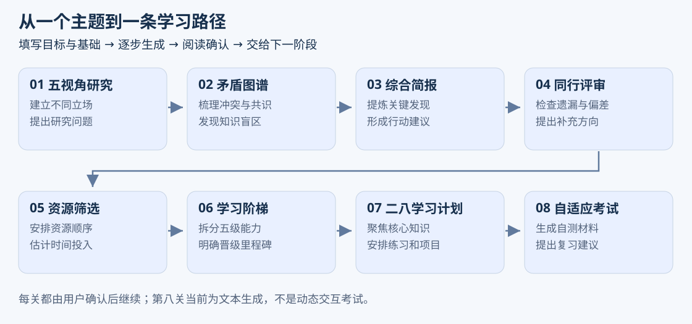
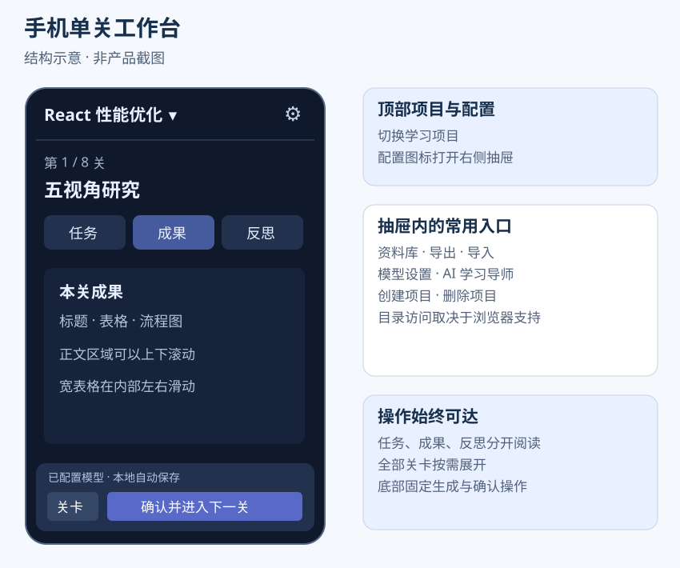
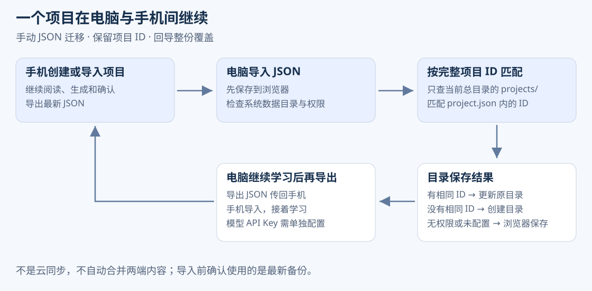

Knowledge Quest 产品介绍与使用指南
适用版本 V3.3 · 2026年11月3日
Knowledge Quest 知识征途，把行业或技术学习整理成从研究、梳理到行动计划的八阶段路径。你可以在电脑集中研究，也可以把项目带到手机继续阅读与生成，再把新成果导回电脑。
本文用于产品介绍、上手指引和运营演示。配图为功能结构示意，不是产品截图；示例用于解释用法，不是已经核实的研究结果。
可以用它做什么

了解新行业。 想学习新能源汽车行业，可以从实践者、学者、怀疑者、经济学家和历史学家等视角开始，生成不同立场的研究材料，再梳理冲突、共识与简报，形成待查证的问题清单。
安排技术学习。 想提高 React 性能优化能力，可以填写基础、目标和时间预算，逐步获得资源建议、能力阶梯、课程与实践项目建议，再结合真实资料动手练习。
管理多个学习主题。 每个项目有自己的目标、进度与成果版本。重新生成时保留新版本，资料库集中展示各项目的已有产出。
在电脑与手机间继续。 导出项目 JSON 传到另一设备，再导入就能保留档案、成果和关卡进度，不必手动复制长段聊天。
解决什么问题
| 常见困扰 | 产品如何帮助 |
|---|---|
| 想学新主题却不知道从哪里开始 | 四个问题建立档案，按八阶段推进 |
| 每次向 AI 提问都要重新介绍背景 | 自动带入项目档案和上游已确认成果 |
| 研究、资料建议与学习计划各自分散 | 在同一项目中逐步生成并保留 |
| 长段文字、表格代码不好读 | Markdown 排版，表格与流程图渲染 |
| 手机上总要下拉寻找生成按钮 | 单关工作台，底部常驻生成和确认 |
| 换设备后难继续 | JSON 往返，电脑按项目 ID 更新原目录 |
八个阶段分别做什么
| 阶段 | 产出方向 |
|---|---|
| 五视角研究 | 不同立场、证据线索与独有问题 |
| 矛盾图谱 | 冲突、共识、知识盲区与关键问题 |
| 综合简报 | 主题概况、关键发现和行动建议 |
| 同行评审 | 遗漏、偏差和补充研究建议 |
| 资源筛选 | 资源建议、使用方式、时间投入与顺序 |
| 学习阶梯 | 五级能力目标、技能、练习与里程碑 |
| 二八学习计划 | 核心知识、课程、每日任务与实践项目 |
| 自适应考试 | 自测和复习相关文本材料 |
实际内容取决于配置的模型。当前不提供独立联网搜索与引用核验，资源链接和事实需要自行确认。反思分数为基础参考展示，不代表专业审核或真实能力测评。考试阶段目前为文本生成，不是动态难度的逐题交互考试。
第一次使用
1 配置模型
电脑点击“模型与设置”；手机已有项目时点击顶部配置图标，再选“模型设置”。填写接口地址、准确模型 ID 和 API Key，可先加载模型列表，再点击测试连接。真实短请求测试成功后配置会保存。
接口需要兼容并允许浏览器访问。生成时项目档案和上游已确认成果会发给你配置的模型服务。API Key 存在当前标签页会话中，不进入项目备份，换设备或会话结束后可能需要重新填写。
未配置模型时可以体验本地模板流程，但模板不是完整的 AI 研究结果。
2 创建项目
选择行业知识或技术知识，回答四个问题：学什么、希望做到什么、当前了解多少、计划投入多少小时。
示例：技术知识；主题“React 性能优化”；目标“独立定位并改善一个页面的渲染瓶颈”；基础“能用 Hooks 开发”；预算“20 小时”。具体目标便于判断成果是否适用。
首次打开可能看到示例项目，可以先体验，再创建自己的主题。没有项目时直接使用创建、导入或模型设置入口。
3 生成并确认
从第一关点击“生成本关成果”。先阅读内容和反思提示，需要另一版时重新生成；确定采用当前草稿后，点击“确认并进入下一关”。下一阶段会读取你已确认的上游成果。
后续关卡在前序确认前保持锁定。重新确认上游后，下游可能提示需更新。最后一关完成代表流程完成，不代表已掌握主题。
4 阅读表格和流程图
表格显示真实行列，手机上较宽的表格可以左右滑动。Mermaid 图形在生成结束后绘制，暂时无法解析时可查看源码或重新生成。流式输出尚未结束时看到代码是正常情况。
5 回顾与提问
资料库汇总所有项目的成果版本，点击后回到对应项目关卡，工作台显示该关最新成果。导师适合询问当前主题和下一步建议；需要讨论具体段落时请在问题中提供内容，导师不会自动拿到全部项目正文。对话目前不作为备份中的长期记录保存。
手机工作台怎么操作

打开项目后，顶部切换项目，配置图标展开资料库、导入导出和模型等功能。“任务”看要求，“成果”读正文，“反思”看参考报告；关卡按钮展开全部阶段。生成和确认在底部常驻，读长文时也不必下拉寻找。
手机通常不支持可写项目目录，以当前浏览器保存和 JSON 备份为主。清理站点数据、换浏览器前请先导出。
电脑目录如何使用
在设置中选择“系统数据目录”，系统在下面维护 projects/。每个项目有自己的文件夹：总文件夹就是系统数据目录，单个项目文件夹就是项目目录。
新建和导入时，权限可用就会创建或更新目录，后续生成与确认继续写回。项目目录保存档案、成果和最新备份。推荐 HTTPS 下的电脑 Chrome 或 Edge；不支持目录也可使用浏览器记录和 JSON。
“打开项目目录”用于恢复一个已有 project.json 的文件夹，不是选择总目录。权限过期时在设置重新选择并授权。
手机与电脑如何接着学

手机开始 电脑继续
- 手机创建项目并生成成果。
- 从配置抽屉导出当前项目，在下载列表或手机“文件”中确认 JSON 已保存。
- 将 JSON 传到电脑，点击“导入项目备份”。
- 电脑有可写的系统目录时创建对应项目目录；没有则保存在浏览器并提示。
电脑开始 手机补充 再回电脑
- 电脑创建项目并完成部分研究，导出 JSON。
- 手机导入并继续生成或确认。
- 手机导出最新 JSON，再传回电脑导入。
- 电脑按完整项目 ID 匹配当前系统目录的原项目，更新原目录；浏览器已有同一项目时需要确认覆盖。
文件名带时间，但系统不自动拦截旧备份。建议同一时间在一个设备继续学习，用最新备份迁移。导入是整份覆盖，不合并两端修改，也不是后台云同步。
备份包括档案、成果版本、关卡和反思，不包括 API Key、目录授权和导师聊天。文件上限为 20 MB，正在生成的请求无法跨设备继续，需要重试。
推荐演示流程
用“React 性能优化”创建演示项目，先展示四项档案；展示第一关生成、表格阅读和确认；再演示手机的三个标签、关卡面板与底部按钮；最后导出 JSON 并在另一设备恢复进度。
演示前测试模型连接，准备标明用途的演示备份。重点展示使用路径，不用虚构的用户数量、完成时长或效率提升数据替代产品说明。
常见问题
换设备模型不能用？ 备份不带 API Key，在新设备重新配置。
电脑导入后没看到目录？ 看保存提示。未设置总目录、权限失效或浏览器不支持时，只保存在浏览器。选择并授权系统目录后再次导入。
同名项目为什么没有合并？ 项目 ID 才是匹配依据，原项目导出的文件会保留它。同名新建项目是另一个项目。
出现本地模板草稿？ 可能没配置模型或服务请求失败。检查警告，测试连接后重新生成。
删除项目会删电脑文件吗？ 只移除应用内记录，磁盘副本仍保留。
可以导入 PDF 或导出 Word 吗？ 当前提供项目 JSON 迁移，尚未提供这些入口。
运营可复用文案
一句话介绍
Knowledge Quest 是将行业研究与技术学习组织成八阶段路径的 AI 工具，支持成果阅读、多项目管理和手机电脑之间的 JSON 备份迁移。
产品介绍
想学一个新主题，可以先把目标、基础和可用时间告诉 Knowledge Quest。从五视角研究、矛盾梳理与简报，逐步推进到资源、能力阶梯和学习计划。每一步由你阅读并确认，再把成果传给下一步。电脑适合集中整理，手机可以继续阅读与生成；导出项目备份，就能把进度带到另一设备。
推荐展示点
- 从学习目标出发，按八阶段生成连续的研究与学习材料。
- 表格和流程图更易阅读，手机操作按钮常驻底部。
- 同一项目可以在手机与电脑间手动迁移，电脑可保存独立目录副本。
发布时应说明需自行配置模型服务、内容需要核实、备份迁移不是云同步。不要宣传自动联网核验、动态考试能力测量、免费模型调用或全面附件支持。